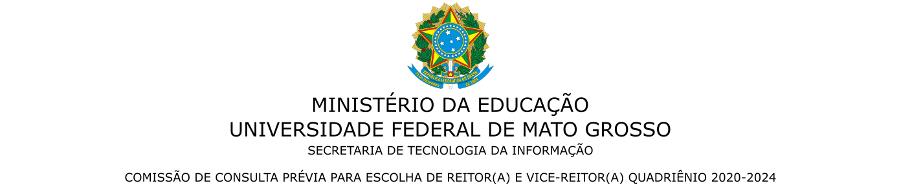
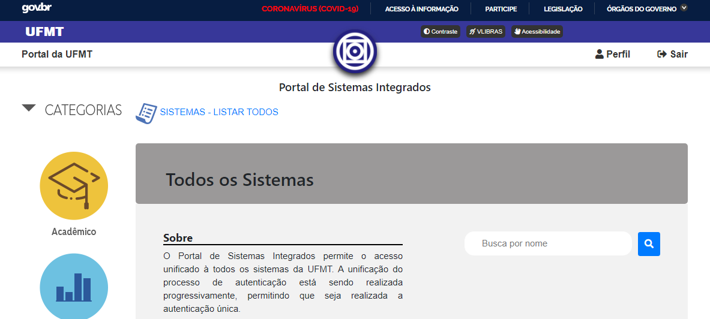
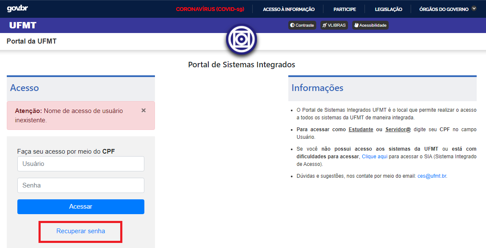
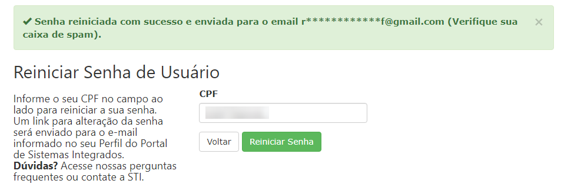
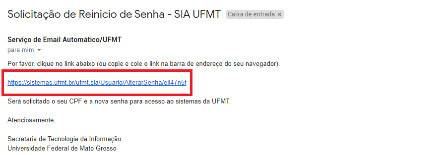
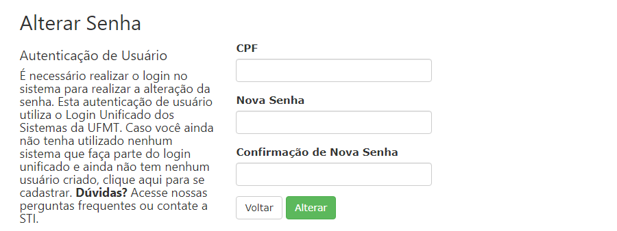
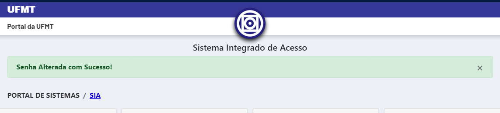
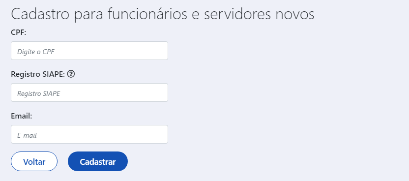
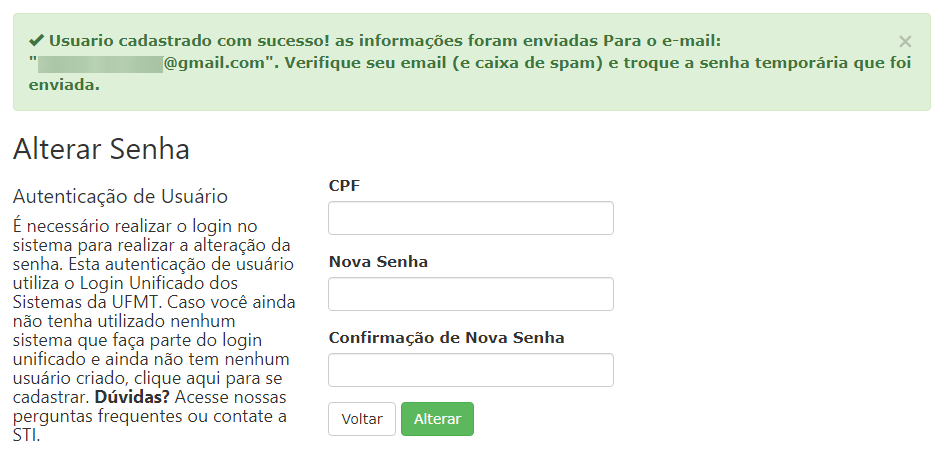
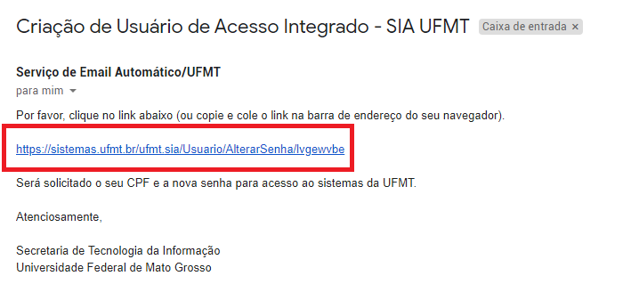

Guia de Orientação para usuários(as) do Portal de Sistemas Integrados da UFMT
1 - Introdução
O acesso ao Portal de Sistemas da UFMT é feito acessando o Portal da UFMT https://www.ufmt.br > Serviços > Portal de Sistemas Integrados ou direto pelo endereço https://sistemas.ufmt.br/ufmt.portalsistemas.
No endereço basta informar seu CPF e sua senha.
Se for exibida a interface mostrada na Figura 1, isto mostra que você está autenticado(a) e apto(a) a acessar os sistemas da UFMT.
 Figura 1 - Tela inicial do Portal de Sistemas Integrados
Caso seja mostrada a mensagem "Senha de acesso do usuário inválida", como mostra a Figura 2, siga os procedimentos para a recuperação de sua senha na seção 2 - Recuperação de senha.
Figura 2 - Aviso de senha inválida
Caso seja mostrada a mensagem "Nome de acesso de usuário inexistente", como mostra a Figura 3, você precisa se cadastrar como um novo usuário. Para isto, siga os procedimentos para o cadastro de um novo usuário na seção 3 - Cadastro de novo usuário.
 Figura 3 - Aviso de usuário inexistente
2 - Recuperação de senha
Se você esqueceu sua senha, basta clicar no link 'Recuperar Senha' como mostra a Figura 2 ou acesse diretamente o endereço https://sistemas.ufmt.br/ufmt.sia/Usuario/ReiniciarSenha.
Será apresentada uma tela conforme mostra a Figura 4. Informe seu CPF e clique no botão 'Reiniciar senha'. Atenção: clique apenas uma vez.
Figura 4 - Tela para solicitar o reinício da senha
Depois de informar o seu CPF e clicar no botão 'Reiniciar senha', você será informado sobre a confirmação de um e-mail enviado, semelhante a mensagem de confirmação que é mostrada na Figura 5.
 Figura 5 - Tela senha reiniciada com sucesso
Agora verifique seu e-mail (e também a caixa de spam). A mensagem pode levar de 5 a 15min para chegar. Clique no endereço que consta no e-mail recebido, conforme destaca o exemplo na Figura 6.
Atenção: Se passaram mais de 15min, você já checou sua caixa de entrada e a caixa de spam e não recebeu a mensagem da UFMT, provavelmente seu e-mail está desatualizado no nosso cadastro. Você pode solicitar a atualização do seu e-mail seguindo as instruções na seção 4 - Solicitar atualização do e-mail.
 Figura 6 - Email para recuperação de senha
Depois de clicar no link indicado na Figura 6, será exibida uma tela conforme mostra a Figura 7. Nesta tela digite seu CPF, sua nova senha e repita a sua senha no campo de confirmação. Clique no botão Alterar.
Atenção: certifique-se de criar uma senha com ao menos uma letra maiúscula, um número e com no mínimo 8 caracteres.
 Figura 7 - Tela para cadastro da nova senha
Tendo sucesso, uma tela de confirmação será exibida, conforme mostra a Figura 8.
 Figura 8 - Tela de confirmação de senha alterada
Parabéns, agora você esta apto(a) a acessar o Portal de Sistemas Integrados, pelo site da UFMT ou acessando o endereço https://sistemas.ufmt.br/ufmt.portalsistemas.
3 - Cadastro de Novo Usuário
Para criar um usuário(a), basta acessar o endereço https://sistemas.ufmt.br/ufmt.sia/Usuario/Cadastro
Será apresentada uma tela conforme mostra a Figura 9. Digite seu CPF, seu SIAPE de aposentado, seu e-mail pessoal e instransferível e clique no botão 'Cadastrar'.
 Figura 9 - Tela para cadastro de novo usuário
Depois de informar seus dados corretamente, você será informado sobre a confirmação de um e-mail enviado, semelhante a mensagem de confirmação que é mostrada na Figura 10.
 Figura 10 - Tela cadastro realizado com sucesso
Agora verifique seu e-mail (e também a caixa de spam). A mensagem pode levar de 5 a 15min para chegar. Clique no endereço que consta no e-mail recebido, conforme mostra a Figura 11.
 Figura 11 - Email para recuperação de senha
Depois de clicar no link indicado na figura 11, será exibida uma imagem conforme mostra a Figura 12. Nesta tela informe seu CPF, sua nova senha e repita a sua senha no campo de confirmação. Clique no botão Alterar.
Atenção: certifique-se de criar uma senha com ao menos uma letra maiúscula, um número e com no mínimo 8 caracteres.
Figura 12 - Tela para cadastro da nova senha
Tendo sucesso, uma tela de confirmação será exibida, conforme mostra a Figura 13.
Figura 13 - Tela de confirmação de senha alterada
Parabéns, agora você esta apto(a) a acessar o Portal de Sistemas Integrados, pelo site da UFMT ou acessando o endereço https://sistemas.ufmt.br/ufmt.portalsistemas.
4 - Solicitar atualização do e-mail
Para solicitar a atualização do seu e-mail no nosso cadastro, envie uma mensagem para o endereço ces@ufmt.br informando seu nome completo, CPF, SIAPE e e-mail pessoal. Você também deve anexar na mensagem um documento válido com foto e um comprovante de endereço residencial.
5 - Contato
E-mail: ces@ufmt.br
Call Center: (65) 3615 - 8020
Funcionamento: 24/07/2020 (horário de Cuiabá)
- 7h30min as 11h30min
- 13h30min as 17h30min
- 18h30min as 22h30min